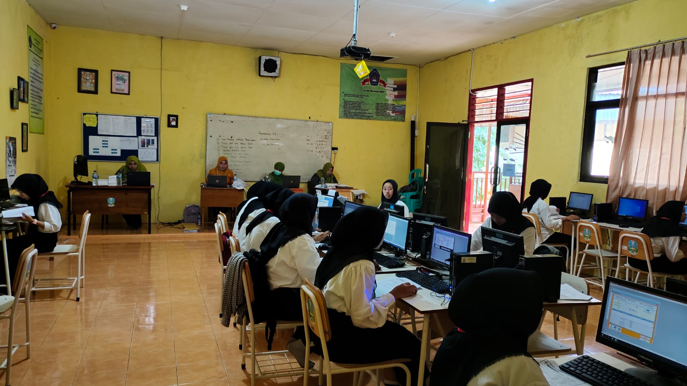
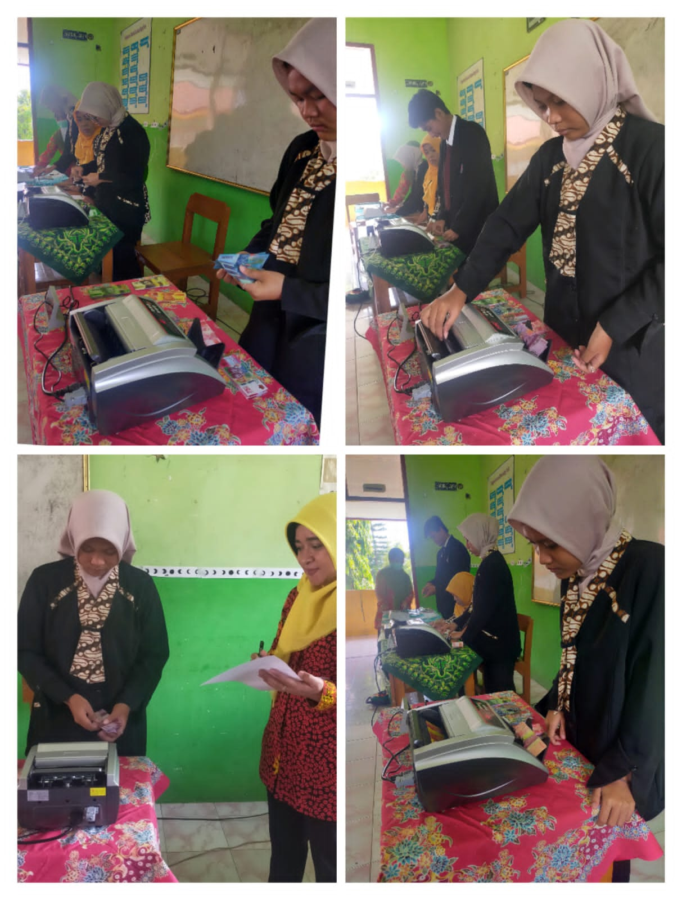

Jurusan Akuntansi
Akuntansi adalah salah satu bidang studi yang memiliki peran penting dalam kegiatan bisnis. Di era modern seperti saat ini, akuntansi menjadi salah satu jurusan yang cukup diminati karena peluang kerja yang luas dan prospek karir yang menjanjikan. Jurusan akuntansi mengajarkan konsep dan teknik untuk mengukur, menganalisis, dan melaporkan keuangan sebuah perusahaan atau organisasi.
Apa itu Akuntansi?
Akuntansi adalah proses pencatatan, pengukuran, dan pelaporan keuangan suatu entitas atau organisasi untuk tujuan pengambilan keputusan yang efektif dan efisien. Hal ini melibatkan pengumpulan dan analisis data keuangan dan informasi lainnya, termasuk transaksi bisnis, pembayaran, dan arus kas. Tujuan dari akuntansi adalah untuk memastikan bahwa keuangan perusahaan teratur, akurat, dan dapat dipercaya, sehingga manajemen dapat mengambil keputusan yang tepat untuk meningkatkan kinerja perusahaan. Akuntansi meliputi berbagai aspek, termasuk akuntansi manajemen, akuntansi keuangan, audit, dan perpajakan.
Prospek Kerja Akuntansi
Dalam dunia bisnis, akuntansi sangat dibutuhkan untuk mengelola keuangan dan keuangan perusahaan. Oleh karena itu, para lulusan jurusan akuntansi memiliki prospek karir yang luas di berbagai bidang dan industri, dari perusahaan swasta hingga pemerintahan. Berikut beberapa peluang karir di bidang akuntansi yang bisa dikejar oleh para lulusan: Akuntan Publik, Akuntan Manajemen, Analis Keuangan, Staff Akuntansi, Komsultan Pajak, Dosen.
